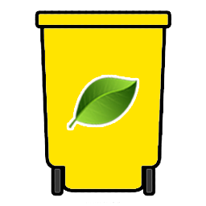
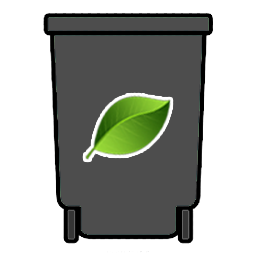

Wyniki wyszukiwania
| 1. | Puszka aluminiowa | Odpad zmieszany | Odpady z tworzyw sztucznych segreguj w żółtych workach lub pojemnikach |
| 2. | Puszka po farbie malarskiej |  Odpad gabarytowy Odpad gabarytowy |
Jest to odpad gabarytowy, należy go oddać podczas odbioru takich odpadów lub samodzielnie odprowadzić na miejscowy PSZOK |
| 3. | Puszka metalowa | Odpad zmieszany | Odpady z tworzyw sztucznych segreguj w żółtych workach lub pojemnikach |
Wyniki wyszukiwania w innych jednostkach
| 1. | Puszka aluminiowa | Odpad zmieszany | Odpady z tworzyw sztucznych segreguj w żółtych workach lub pojemnikach |
| 2. | Puszka po farbie malarskiej | Odpad gabarytowy | Jest to odpad zmieszany, należy segregować go w czarnym pojemniku lub worku |
| 3. | Puszka metalowa | Odpad zmieszany | Odpady z tworzyw sztucznych segreguj w żółtych workach lub pojemnikach |